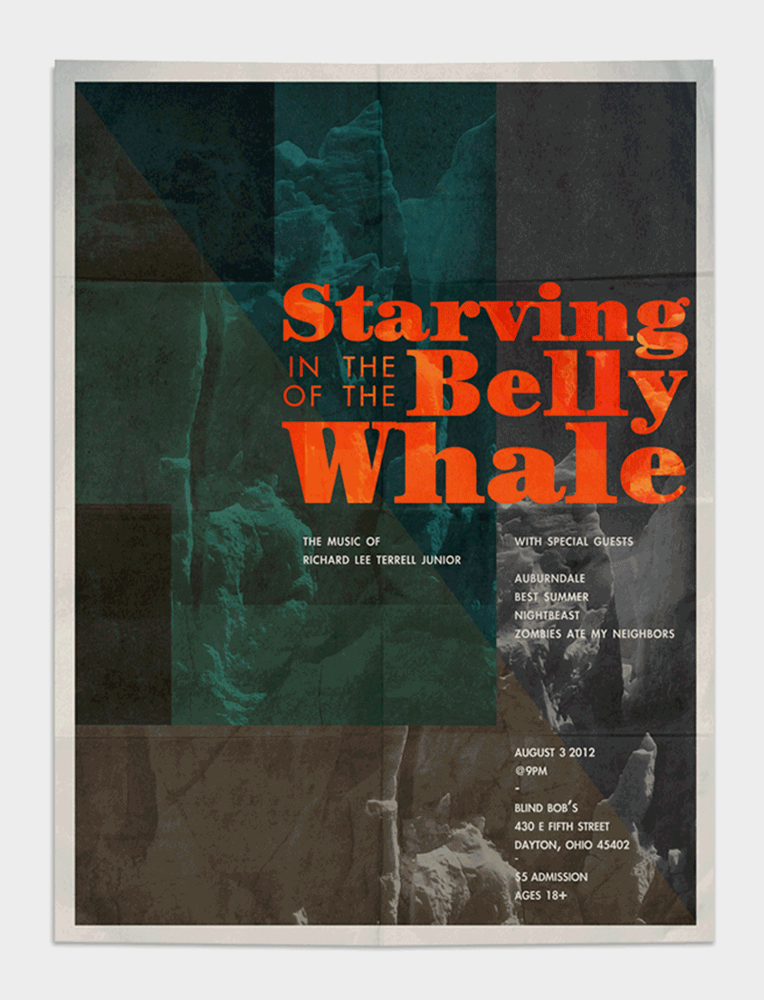
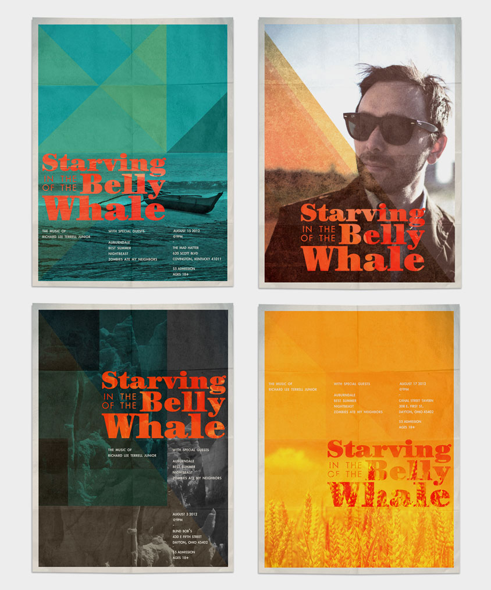
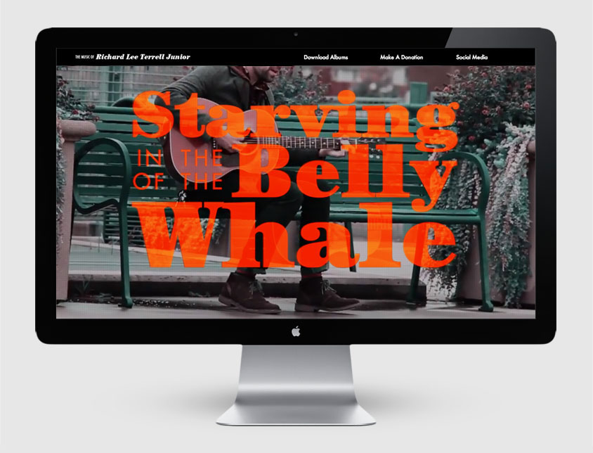
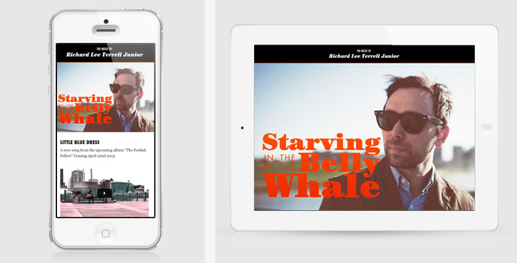
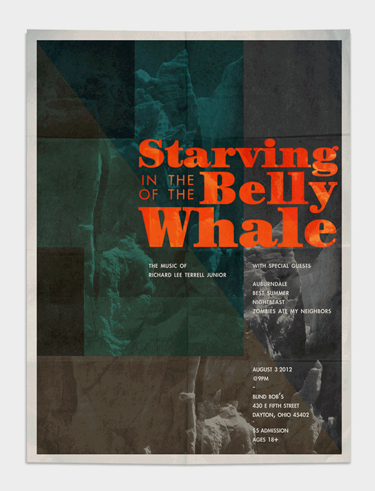
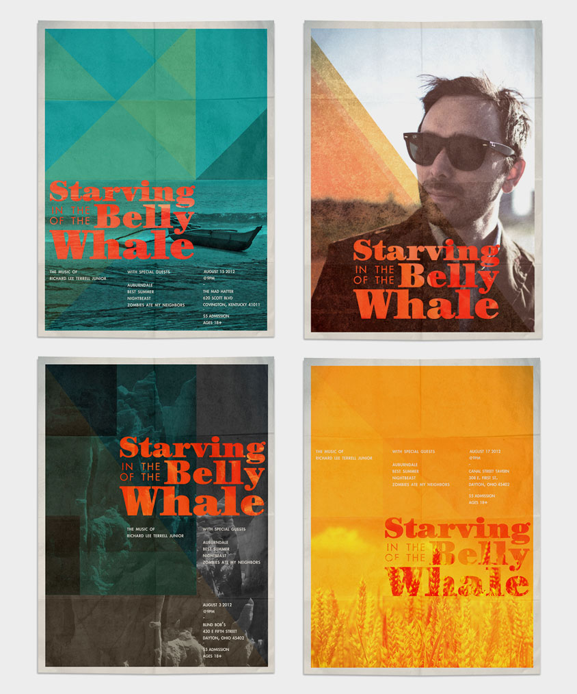
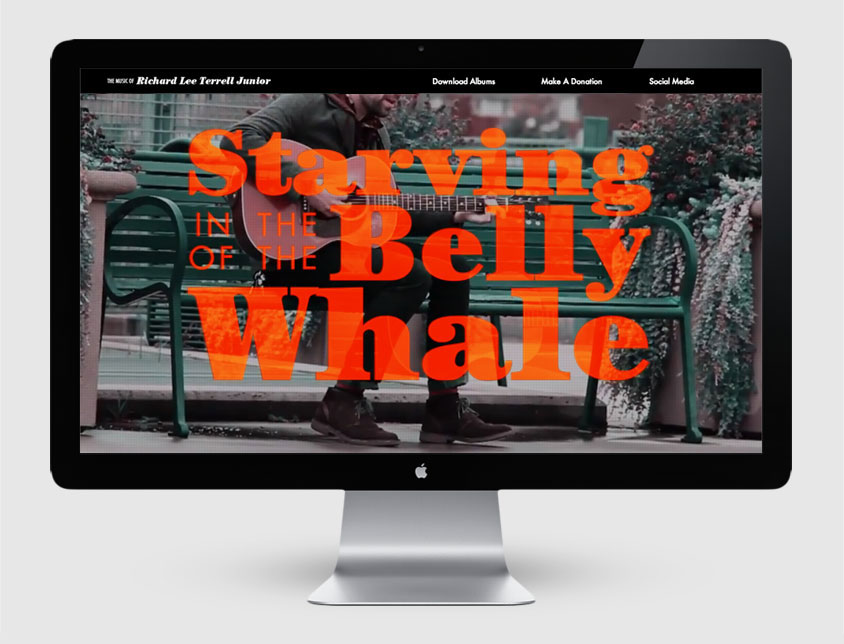
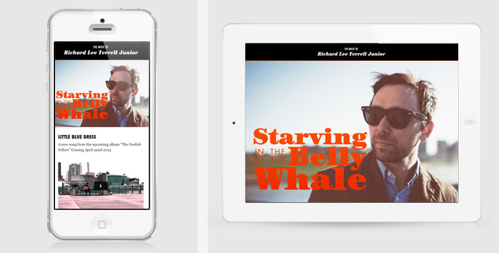

Starving in the Belly of the Whale
Art Direction, Design, Web Development
I helped Richard Lee Terrell create a typography based identity for his musical endeavors known as "Starving in the Belly of the Whale". The identity was used for a series of posters, website, and various types of merchandise.
Visit Website Back to Top